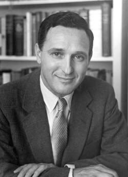

Andrija Puharich
Physician and parapsychologist, 1918 to 1995

A physician and inventor, born in Chicago to Croatian immigrants, who earned his medical degree at Northwestern in 1947. From 1948 he ran a private research laboratory in Maine, the Round Table Foundation, studying psychics and mind-altering substances until it was disbanded in 1958. In 1952 he presented a paper at the Pentagon on the possible usefulness of extrasensory perception in psychological warfare. 1,2,3
From 1953 to 1955 he served as an Army Medical Corps captain at the Army Chemical Center at Edgewood Arsenal, Maryland, while presenting papers on military uses of paranormal phenomena. He later co-founded the Intelectron Corporation, which developed hearing devices, and held more than 50 patents. 1,2
In December 1952 a mystic at one of his sessions, Dhundiraj Vinod, claimed to channel beings calling themselves the Nine. Puharich met Uri Geller in 1971 and helped bring him to the United States, and his 1974 book Uri claimed that extraterrestrials had chosen Geller. Reviewers called the book credulous, and the Society for Psychical Research's encyclopedia says his belief that Geller was an ambassador for extraterrestrials made him seem gullible. 1,2,4
Open in the interactive Watcher
Related
- Round Table Foundation
- Puharich and the Nine The Nine
- Army Army Medical Corps, 1953 to 1955
- Uri Wrote Uri, 1974
- SRI psychic tests in Nature Geller's SRI tests, published 1974
- Intelectronics Subject of Jorjani's Intelectronics
- Uri Geller's powers came from extraterrestrials Claim
Sources
- Andrija Puharich Wikipedia
- Andrija Puharich Psi Encyclopedia, Society for Psychical Research
- Parapsychology in Intelligence: A Personal Review and Conclusions (Kenneth A. Kress) CIA, Studies in Intelligence, 1977
- Uri Geller Wikipedia